Chapter 9 Plotting
There are two graphics systems in R
- Traditional graphics
- Grid graphics
9.1 Traditional plots
plot(cars)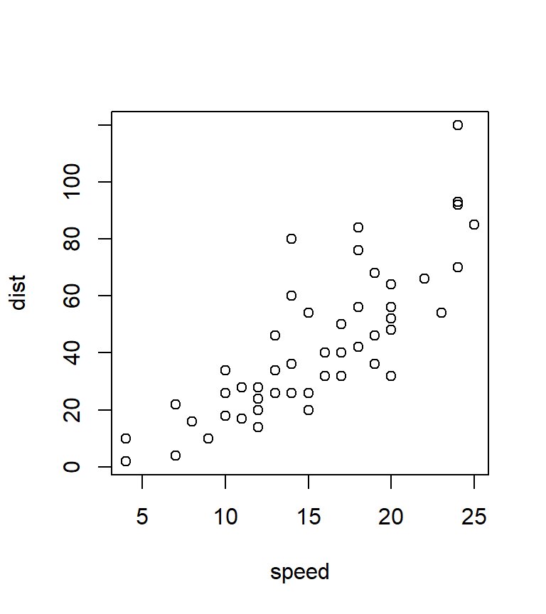
Stepwise plotting – first example:
dat <- read.table(header = TRUE, text = "
A B rt
a1 b1 825
a1 b2 792
a1 b3 840
a2 b1 997
a2 b2 902
a2 b3 786
", stringsAsFactors = TRUE)
plot(rt ~ as.numeric(B), dat, type = "n", axes = FALSE, xlim = c(.8, 3.2),
ylim = c(750, 1000), xlab = "Difficulty", ylab = "Mean reaction time (ms)")
# Plot the data points separately for each level of factor A.
points(rt ~ as.numeric(B), dat[dat$A == "a1", ], type = "b", pch = 16)
points(rt ~ as.numeric(B), dat[dat$A == "a2", ], type = "b", pch = 4)
# Add axes and a legend.
axis(side = 1, at = 1:3, expression(B[1], B[2], B[3]))
axis(side = 2)
legend(2.5, 975, expression(A[1], A[2]), pch = c(16, 4), bty = "n",
title = "Task")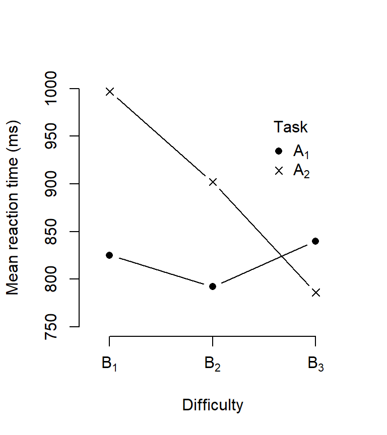
Second example:
plot(Sepal.Length ~ Sepal.Width, iris, axes = FALSE, type = "n",
xlab = "Sepal width", ylab = "Sepal Length")
points(Sepal.Length ~ Sepal.Width, subset(iris, iris$Species == "setosa"),
col = "magenta", pch = 21)
points(Sepal.Length ~ Sepal.Width, subset(iris, iris$Species == "versicolor"),
col = "red", pch = 22)
points(Sepal.Length ~ Sepal.Width, subset(iris, iris$Species == "virginica"),
col = "purple", pch = 23)
axis(1)
axis(2)
legend("topleft", c("setosa", "versicolor", "virginica"),
pch = 21:23, col = c("magenta", "red", "purple"), bty = "n")
lm1 <- lm(Sepal.Length ~ Sepal.Width, subset(iris, iris$Species == "setosa"))
lm2 <- lm(Sepal.Length ~ Sepal.Width, subset(iris, iris$Species == "versicolor"))
lm3 <- lm(Sepal.Length ~ Sepal.Width, subset(iris, iris$Species == "virginica"))
abline(lm1, col = "magenta")
abline(lm2, col = "red")
abline(lm3, col = "purple")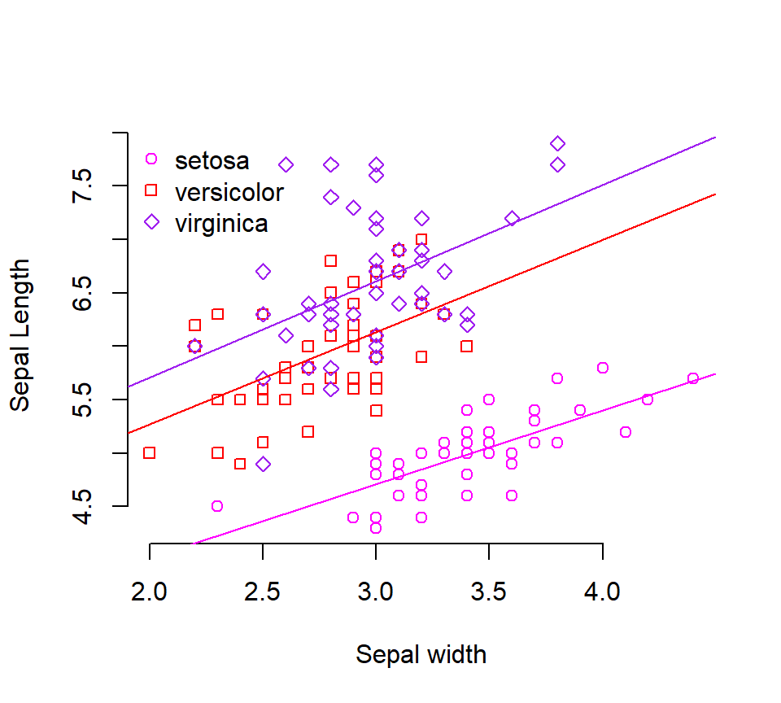
9.2 Lattice plots
The lattice package implements Trellis plots in R. These are plots conditional on other variables. They are perfectly suited for visualizing complex relationships.
library(lattice)
states <- data.frame(state.x77, state.name = state.name,
state.region = state.region) # built-in data sets
xyplot(Murder ~ Population | state.region, states)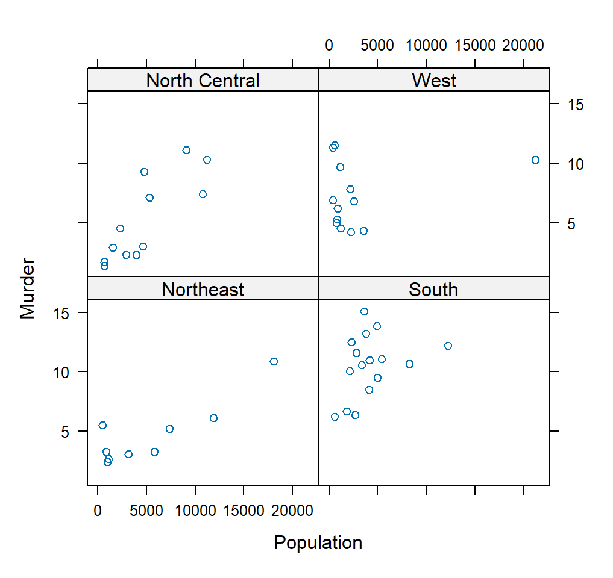
xyplot(Sepal.Length ~ Sepal.Width, iris, groups = Species,
type = c("p", "r"), auto.key = TRUE)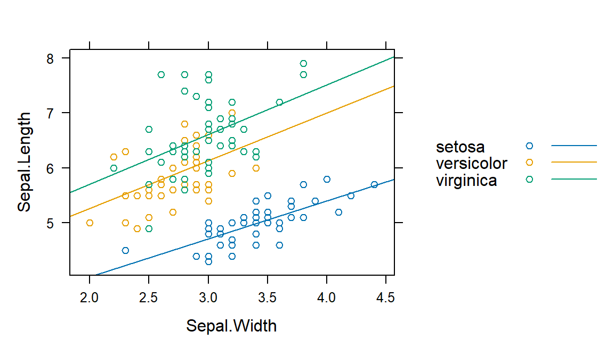
Other example to “quickly” look at data:
xyplot(weight ~ Time | Diet, ChickWeight, groups = Chick,
type = c("g", "p", "r"))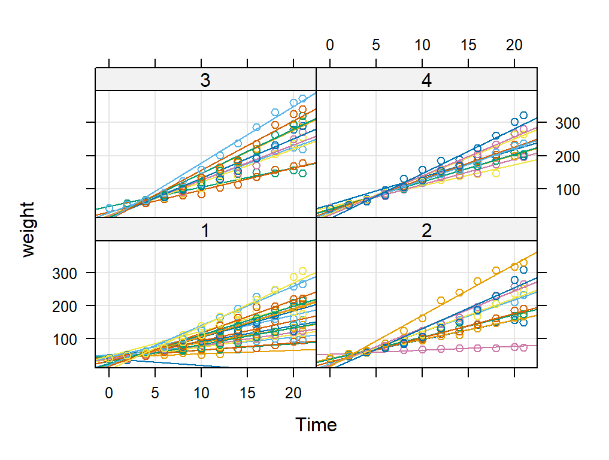
9.3 The Grammar of Graphics ggplot2
R has very powerful graphics function. Creating beautiful (publication
ready) plots might be one of the best reasons to learn R. The R package
ggplot2 gives you endless possibilities. In recent years it has become
the state of the art way to create plots in R. It has a steeper learning
curve than the functions above (and I recommend to get some knowledge about
them, too, so you understand how plotting in R works), but it is well worth
the effort to invest some time. A good place to start are the following
(online) books:
- Chang, W. (2018). R graphics cookbook: practical recipes for visualizing data. O’Reilly Media. https://r-graphics.org/
- Wickham, H. (2016). ggplot2: elegant graphics for data analysis Springer-Verlag New York. https://ggplot2-book.org/
The grammar of graphics has a simple structure
ggplot(data = <DATA>) +
<GEOM_FUNCTION>(
mapping = aes(<MAPPINGS>),
stat = <STAT>,
position = <POSITION>
) +
<COORDINATE_FUNCTION> +
<FACET_FUNCTION># load package
library(ggplot2)
# load data
data(mpg)
# ?mpg
mpg## # A tibble: 234 × 11
## manufacturer model displ year cyl trans drv cty hwy fl class
## <chr> <chr> <dbl> <int> <int> <chr> <chr> <int> <int> <chr> <chr>
## 1 audi a4 1.8 1999 4 auto(l5) f 18 29 p compact
## 2 audi a4 1.8 1999 4 manual(m5) f 21 29 p compact
## 3 audi a4 2 2008 4 manual(m6) f 20 31 p compact
## 4 audi a4 2 2008 4 auto(av) f 21 30 p compact
## 5 audi a4 2.8 1999 6 auto(l5) f 16 26 p compact
## 6 audi a4 2.8 1999 6 manual(m5) f 18 26 p compact
## 7 audi a4 3.1 2008 6 auto(av) f 18 27 p compact
## 8 audi a4 quattro 1.8 1999 4 manual(m5) 4 18 26 p compact
## 9 audi a4 quattro 1.8 1999 4 auto(l5) 4 16 25 p compact
## 10 audi a4 quattro 2 2008 4 manual(m6) 4 20 28 p compact
## # ℹ 224 more rows9.3.1 Some examples
# start your plot with coordinate system
ggplot(data = mpg) +
geom_point(mapping = aes(x = displ, y = hwy)) + # then add layers
theme_bw() # and a theme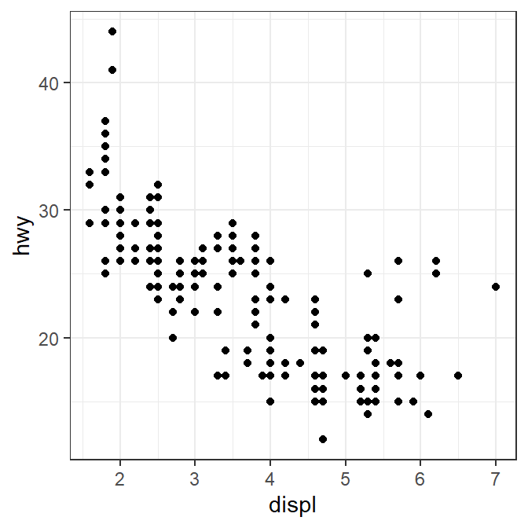
# even more information
ggplot(data = mpg) +
geom_point(mapping = aes(x = displ, y = hwy, shape = fl))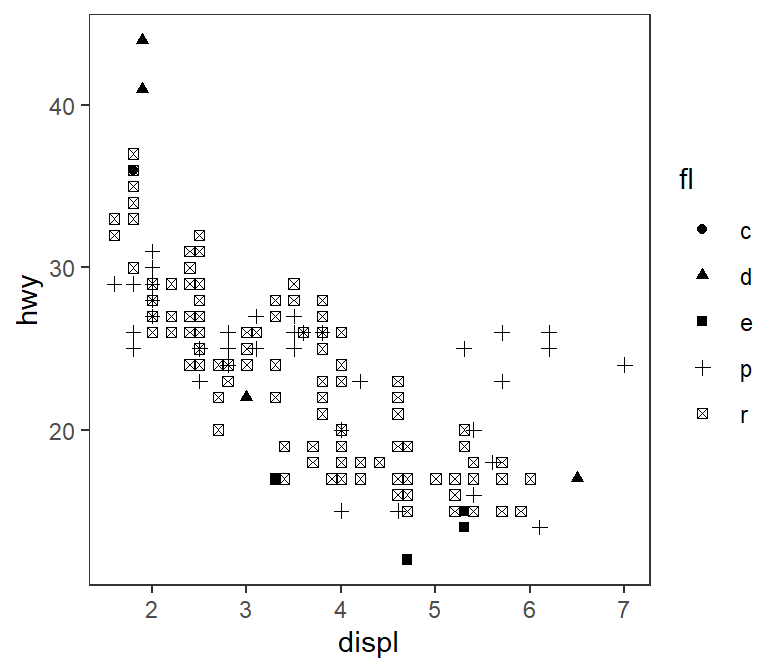
What is the difference between these plots?
ggplot(data = mpg) +
geom_point(mapping = aes(x = displ, y = hwy, color = class))
ggplot(data = mpg) +
geom_point(mapping = aes(x = displ, y = hwy), color = "blue")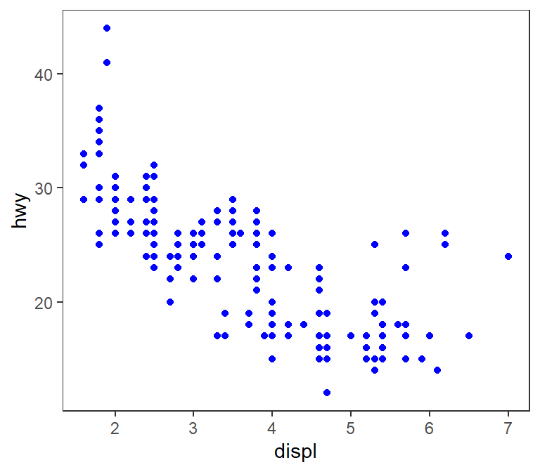
What happens when we do this?
ggplot(data = mpg) +
geom_point(mapping = aes(x = displ, y = hwy, color = "blue"))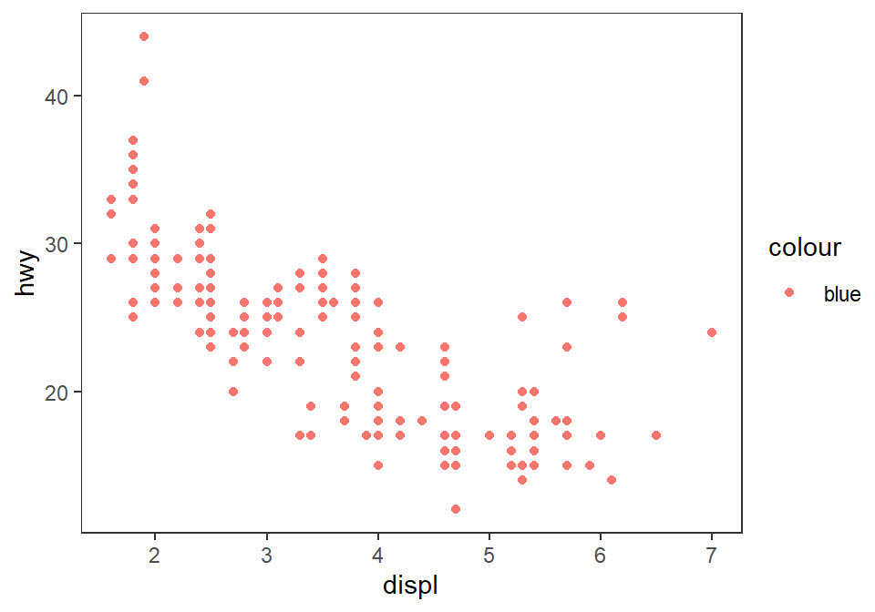
9.3.2 Facets
- Way to visualize additional variables
- Split plot into several facets
- Usually only meaningful for categorical variables
- Used with R’s formula notation
y ~ x
# one variable
ggplot(data = mpg) +
geom_point(mapping = aes(x = displ, y = hwy)) +
facet_wrap(~ class, nrow = 2)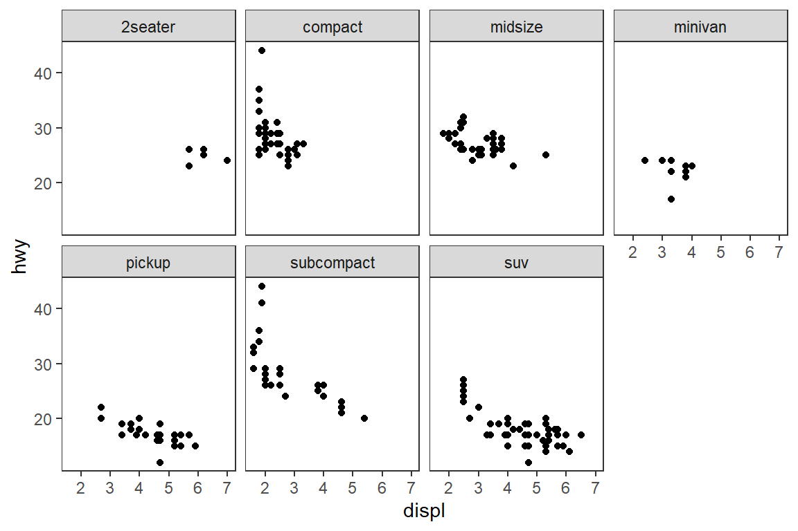
# two variables
ggplot(data = mpg) +
geom_point(mapping = aes(x = displ, y = hwy)) +
facet_grid(drv ~ cyl)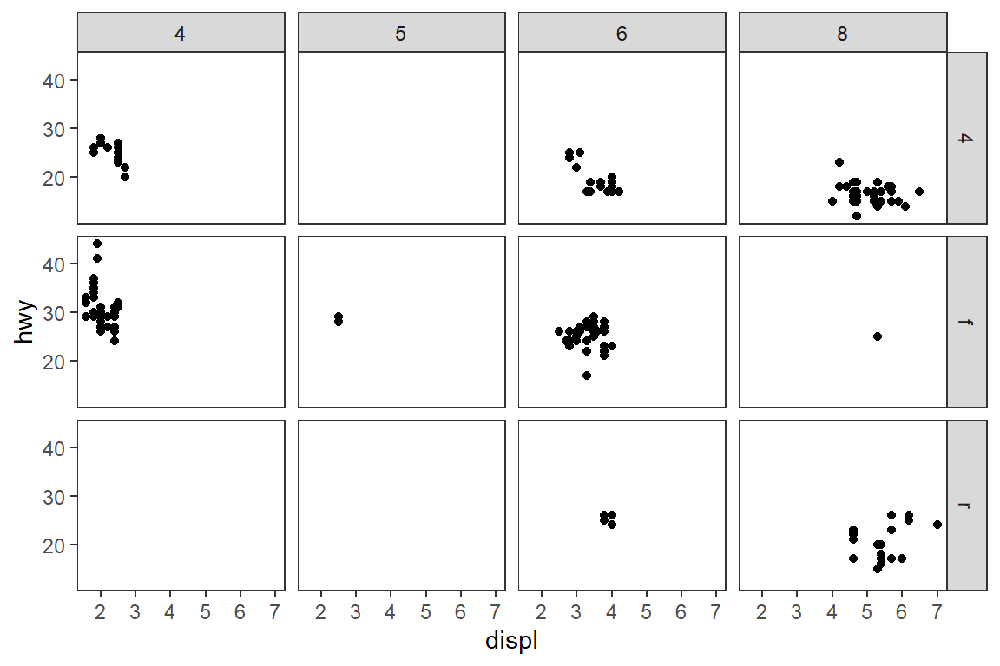
9.3.3 Geometric objects
- A
geomis the geometrical object that a plot uses to represent data - For example bar charts, box plots, line charts, …
- Every
geomfunction takes amappingargumentggplot2provides over 40geoms, and extension packages provide even more (see https://exts.ggplot2.tidyverse.org/gallery/ for a sampling)
# scatter plot
ggplot(data = mpg) +
geom_point(mapping = aes(x = displ, y = hwy))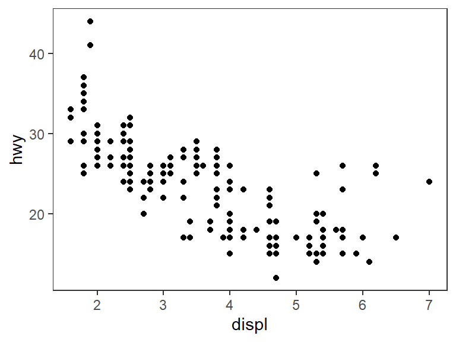
# fitted line
ggplot(data = mpg) +
geom_smooth(mapping = aes(x = displ, y = hwy))## `geom_smooth()` using method = 'loess' and formula = 'y ~ x'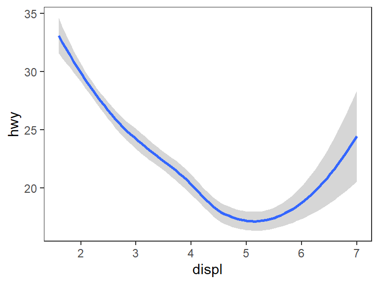
# add another variable
ggplot(data = mpg) +
geom_smooth(mapping = aes(x = displ, y = hwy, linetype = drv))## `geom_smooth()` using method = 'loess' and formula = 'y ~ x'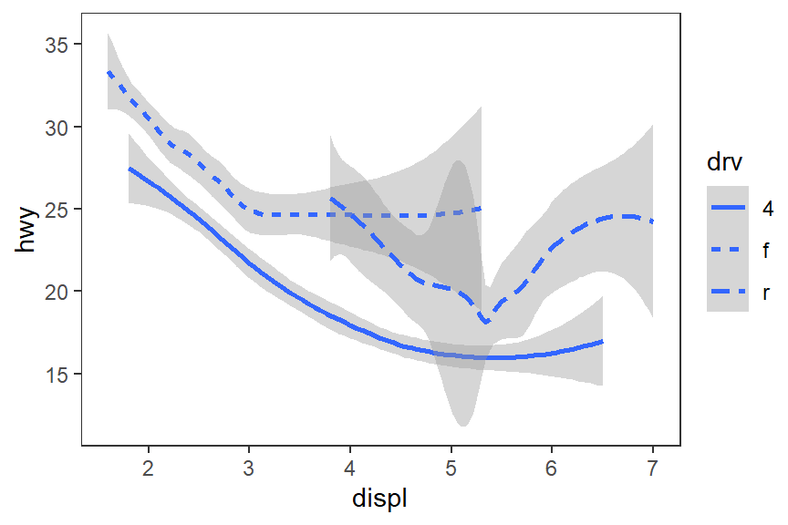
# more layers: points and regression lines
ggplot(mpg) +
geom_point(aes(x = displ, y = hwy, color = drv)) +
geom_smooth(aes(x = displ, y = hwy, color = drv), method = "lm")## `geom_smooth()` using formula = 'y ~ x'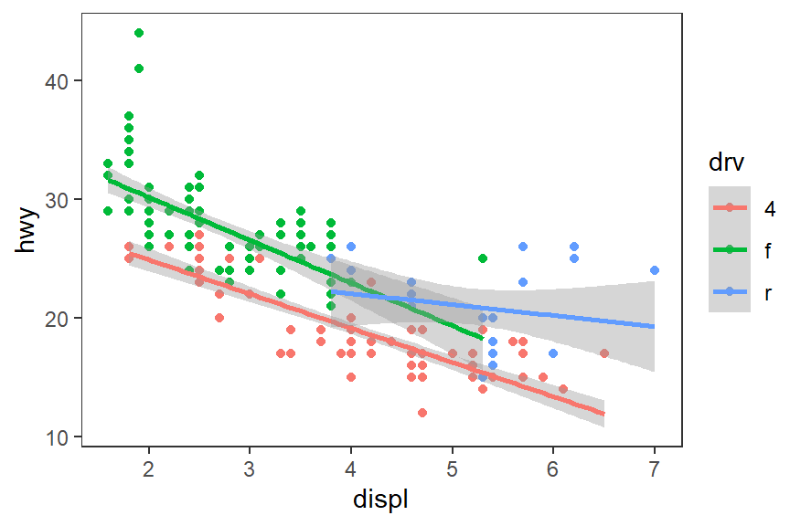